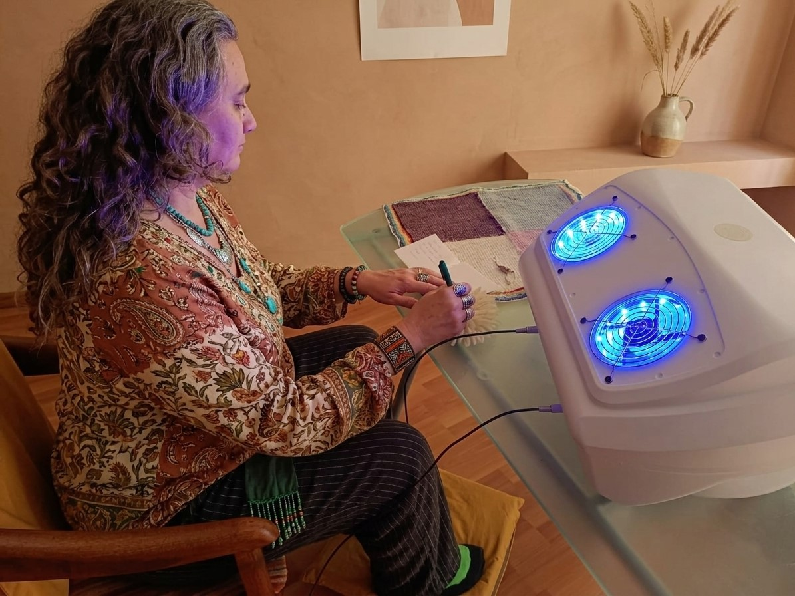

Compromiso, presencia y guía en cada proceso de sintonía

Soy Laura Fernández, Licenciada en Recursos Humanos y especialista en bienestar sistémico. Hace más de 15 años que acompaño procesos de cambio, toma de decisiones y gestión de energía en personas y equipos.
Mi camino empezó en el ámbito educativo y empresarial: orientación vocacional, desarrollo de equipos, diseño de experiencias de aprendizaje. Después se amplió hacia lo sistémico y lo energético: formación en reprogramación subconsciente, terapia integrativa, medicina tradicional, sistema Huna, doula de fin de vida y profesorado de Tai Chi y Qi Gong.
No es un salto. Es una evolución. Cada paso me fue mostrando que el cambio real no se fuerza: se sostiene. Que la energía no se impone: se facilita. Y que la tecnología, por más potente que sea, es solo un instrumento si no hay una mirada humana que la contenga. Los cierres de ciclo (y apertura de nuevas experiencias para no seguir repitiendo) en nuestra vida ocurren naturalmente si lo permitimos; sino, necesitamos acompañamiento[cite: 8].
Detrás de cada sesión hay una mirada humana, rigurosa y profundamente respetuosa de los procesos individuales. Mi rol como operadora no es intervenir ni forzar resultados, sino sostener un espacio calibrado donde el campo y la persona puedan interactuar de forma óptima.
A lo largo de mi recorrido, he comprobado que la tecnología escalar funciona como un puente excelente, pero es la disposición interna del consultante —junto con un acompañamiento claro y presente— lo que permite que la experiencia se traduzca en orden, bienestar y claridad real.
“No vengo a decirte qué hacer. Vengo a sostener un espacio para que tu sistema se reorganice solo.”